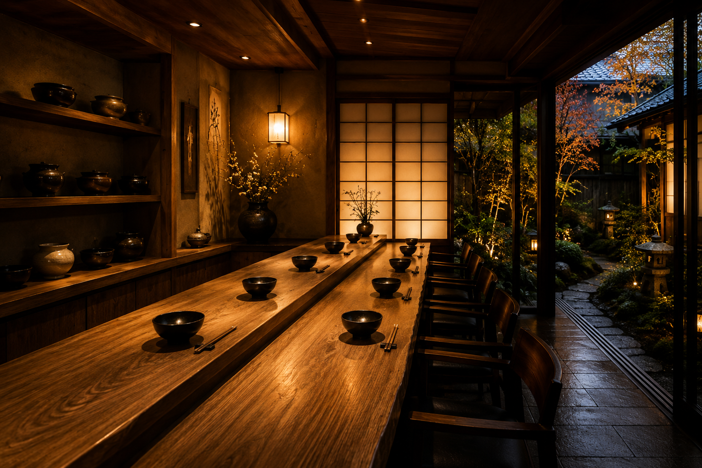
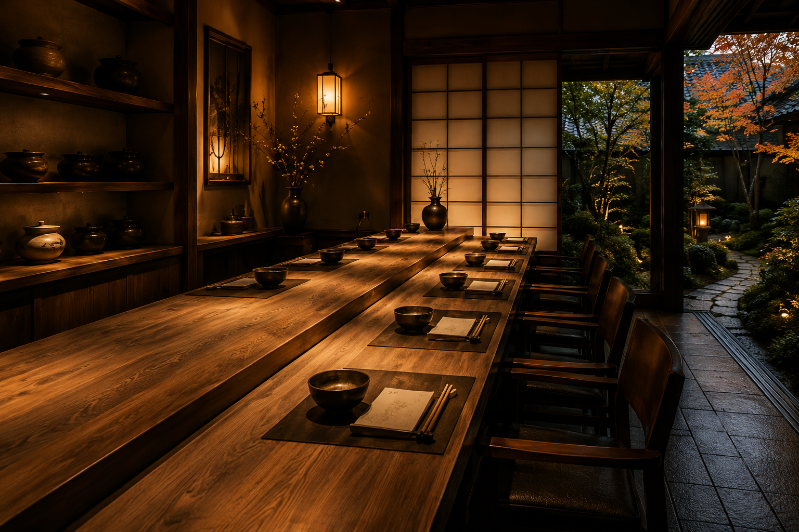
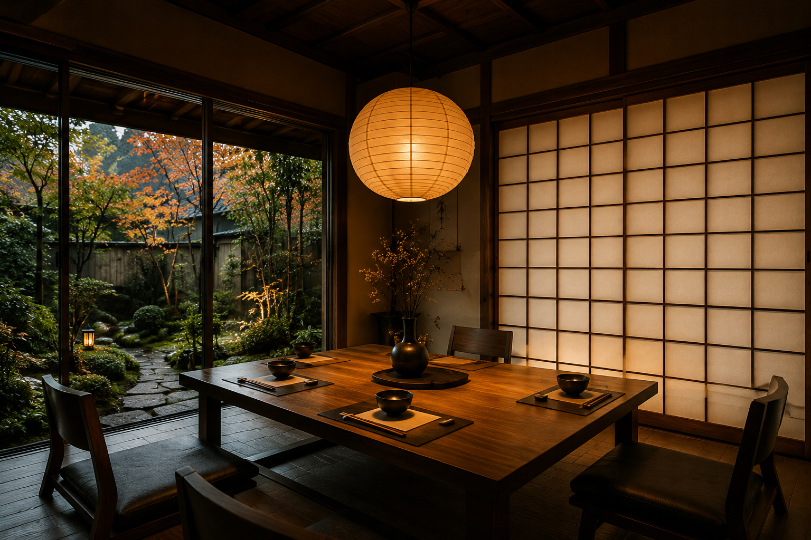
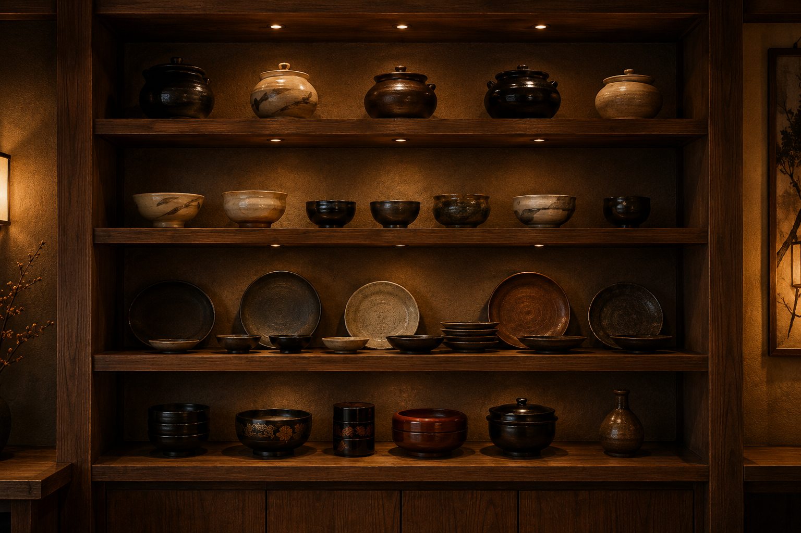

器
一椀ごとの表情を引き立てる、手仕事の温度を感じる器。
静かな街並みに佇む雑煮庵。
一椀に込めた文化を、ここで。

この土地に根付く文化とともに、雑煮庵は静かに佇んでいます。
季節の移ろい、器の手触り、静かな時間。そのすべてが一椀の体験につながります。

一椀ごとの表情を引き立てる、手仕事の温度を感じる器。

落ち着いた余白と素材感で、日本らしい静けさを感じられる空間。

初めて訪れる方にも安心して楽しめる、丁寧で控えめな接客。
静かな空間で、
日本の時間を味わいませんか。